The Flat Application Timeline Page is where citizens land to see where their BTO application currently stands. The page is delivered as two separate views, each shown to citizens based on their current application stage: i) Cards 1 to 4, owned by my in-house team (Team A), and ii) Cards 5 to 8, owned by an external agency partner (Team B). Team B had completed discovery research, an initial usability test on a subset of their active cards, and a first design refinement before being pulled to other priorities. In the interim, the in-house design system was updated, which became an additional consideration when I took over. My role was to bring the design back into alignment: updating it to reflect the refreshed design system, validating the untested Cards 1 to 4 content, extending validation to the previously untested mobile view, and producing a layout pattern that Team B's design team agreed to adopt for their own cards once their development capacity resumes.
Process TimelineHow the work moved from Team B's paused prior work, through the in-house phase I led, to the layout pattern accepted across both versions of the proposed production timeline page.
01 ▪ Role & Stakeholders
Aligning across teams without owning them
The Flat Application Timeline Page sat across an organisational boundary I did not own. My in-house team held Cards 1 to 4; an external agency partner's team held Cards 5 to 8. Bringing the timeline back into alignment meant working with stakeholders who reported through different chains, on different priorities, with different delivery rhythms.
02 ▪ Approach & Iterations
Establish the foundation before exercising design judgment
The work I inherited had been paused mid-stream. The first judgment call was deciding what to trust and what was sound to carry forward.
Phase 01 ▪ Establish the foundation
Synthesising industry practice, compliance standards and business requirements
01
Benchmarked timeline patterns externally
Researched how other governments and Singapore agencies present timeline steppers in citizen-facing applications. The benchmarking surfaced a recurring pattern across the examples reviewed: content-rich timelines were typically collapsed into a simplified view, rather than displayed in full. This diverged from Team B's approach, which kept all step details visible, auto-scrolled on page load, and provided a step jumper to navigate to the current active step. The step jumper appeared as a sticky element on the side of the page, showing all steps as a compact list; on mobile, it translated to a sticky dropdown. Tapping any step would scroll the page to that step's card. The divergence between this approach and the industry pattern became the basis for proposing an alternative direction worth testing.
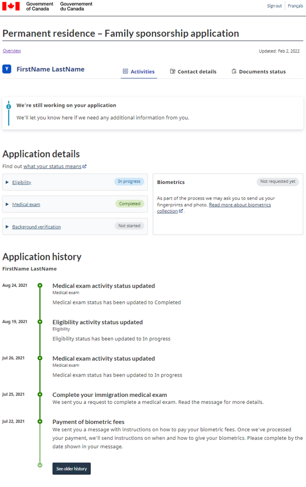
⤢ Expand
Benchmark · Canada GovernmentStep descriptions are short and precise. Longer instructions are collapsed and only revealed when the citizen expands a step.
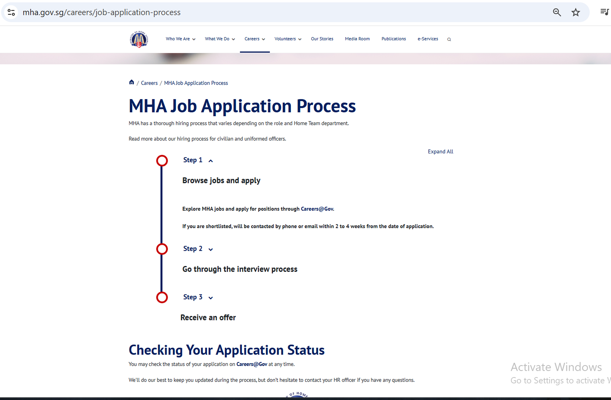
⤢ Expand
Benchmark · MHA SingaporeStep titles surface at a glance. Detail is hidden by default and expandable on demand, consistent with the pattern found across the examples reviewed.
02
Inherited Team B's prior work, and identified the gaps in it
Reviewed Team B's UT findings, their last refined design proposal, and the scope of their usability testing. The goal was to carry forward what had been validated, not to redo what had already been thought through, but also to identify what had been left untested. One gap surfaced clearly: Team B had only validated the desktop view; the mobile version of the timeline had never been tested. That gap shaped the validation scope I would later own.
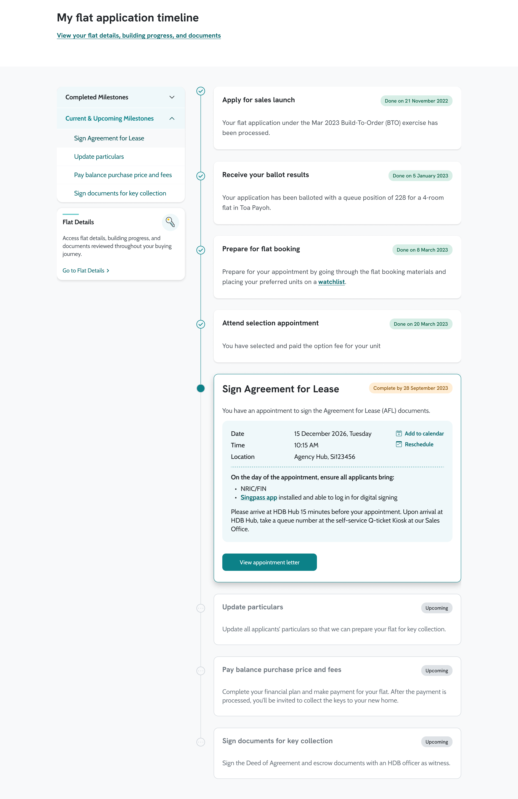
⤢ Expand
Team B · Last Design · DesktopAll step details visible on load, with a sticky step jumper on the right for milestone navigation.
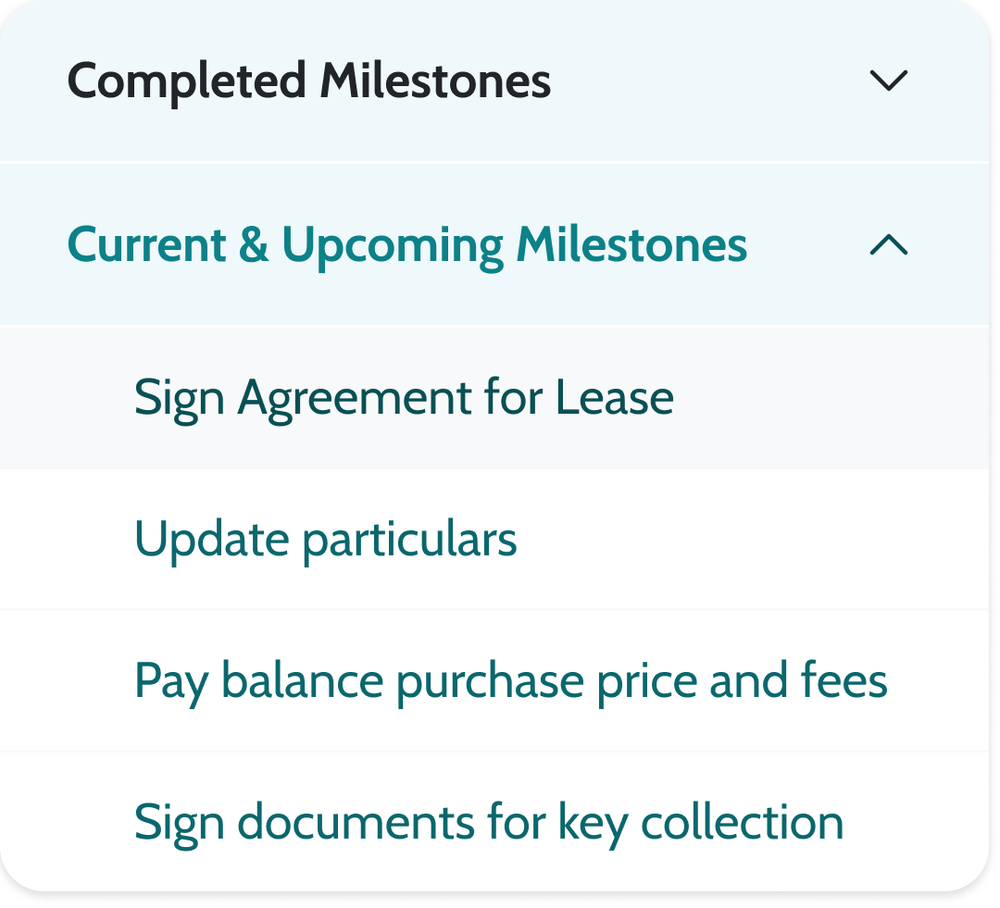
Team B · Step Jumper · DetailThe sticky step jumper listing completed and pending milestones, the interaction pattern later tested against the collapsed toggle.
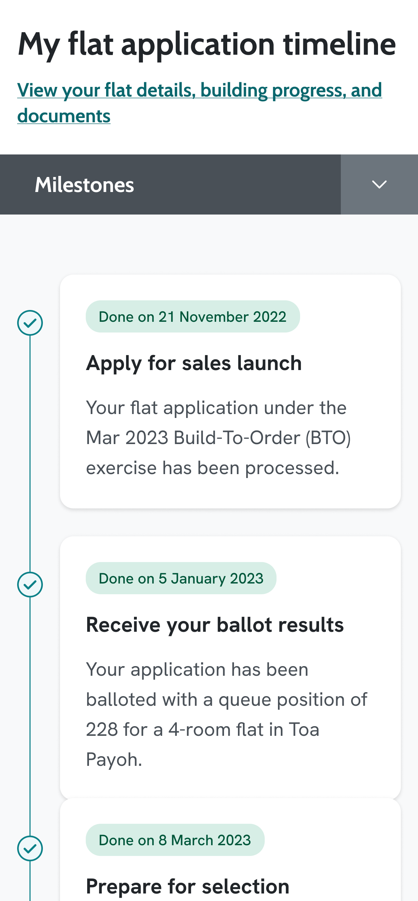
⤢ Expand
Team B · Last Design · MobileMobile version of Team B's last design, untested at point of handover.
03
Audited the design system and current production state
Mapped what had changed in the in-house design system since Team B's last design refinement, so that the new design would land on current standards. Then reviewed the existing UI on production, which at the time only surfaced Cards 1 to 4 to citizens. This grounded the work in what citizens were actually seeing today, not the proposed future state.
04
Engaged the System Stewards
Worked with the system administrators who run the live system day-to-day to understand the critical business processes behind Cards 1 to 4.
Phase 02 ▪ Design, Validate & Align
Proposing an alternative, testing it against the existing proposal, and landing the recommendation across teams
05
Drafted an alternative direction grounded in the benchmarking
Designed a collapsed completed step toggle as a deliberate alternative to Team B's step jumper. Three principles shaped the alternative:
No auto-scroll. Citizens should not see unexpected page movement without their explicit intent to scroll.
Completed steps as less critical content. Past steps were collapsed by default, surfaced only when citizens chose to reveal them via a Show completed steps toggle.
Active step as the entry point. With completed steps collapsed, the active step card was always the first card a citizen saw on page load, without any auto-scrolling to reach it.
The design was produced for both desktop and mobile from the start, since extending validation to mobile was one of the gaps identified in Step 02.
Alternative approach to the Initial Suggestion
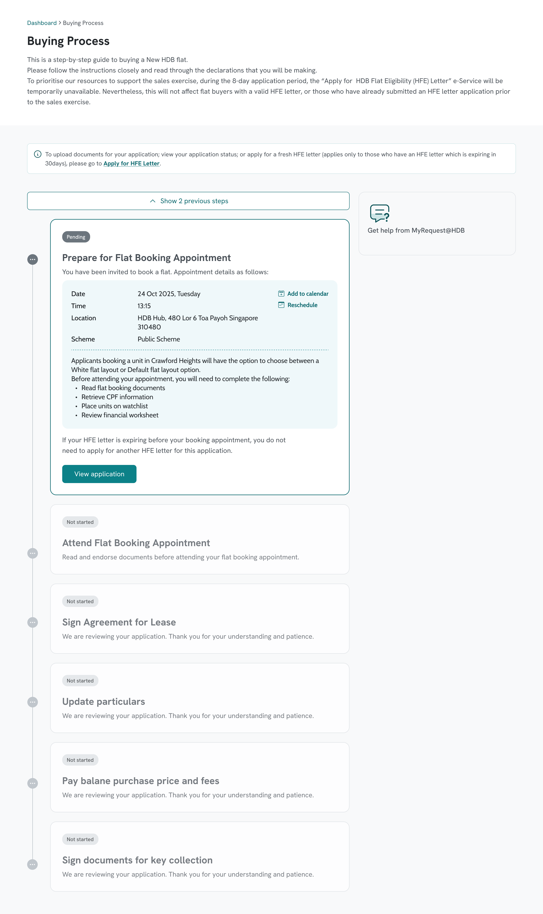
⤢ Expand
Alternative Design · Desktop · DefaultCompleted steps collapsed. Active step anchors the top of the timeline.
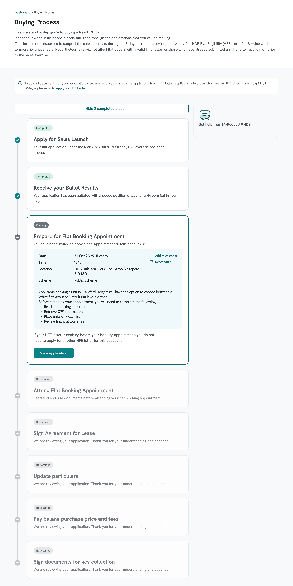
⤢ Expand
Alternative Design · Desktop · ExpandedCompleted steps revealed after toggling Show completed steps.
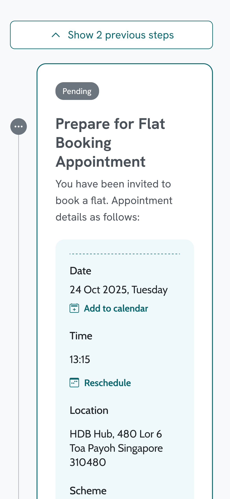
⤢ Expand
Alternative Design · MobileCollapsed state on mobile. Toggle sits above the active card.
06
Aligned the test scope with Team B before running it
Shared the test scope and both prototypes with Team B's design team before conducting the usability test. The intent was twofold: to ensure their design was being represented accurately in the prototype I had built, and to remove any political risk of A/B-testing a peer team's design without their visibility. Coordinating across teams with separate reporting lines and misaligned development timelines meant that alignment had to be built into the process from the start, not negotiated at the end.
07
Designed and ran the A/B usability test
Agreed the test scope and scenarios with the System Stewards, then designed the prototypes, scenarios and scripts on my own. My UX teammate served as note-taker; I moderated. A round of 10 participants, split evenly between the two prototypes (5 per group), tested across both desktop and mobile.
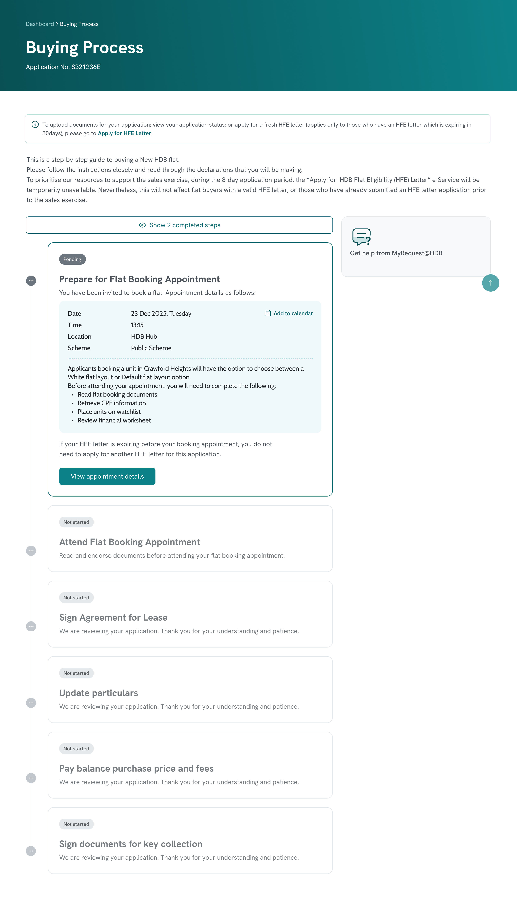
⤢ Expand
Prototype A · Collapsed Toggle · DesktopThe alternative design: completed steps hidden by default, active step anchored at top, no auto-scroll.
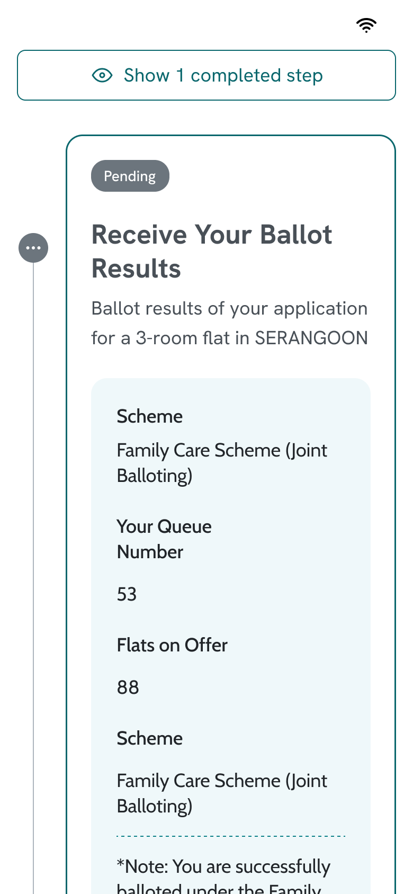
⤢ Expand
Prototype A · Collapsed Toggle · MobileShow completed steps button above the active card; side panel stacks below.
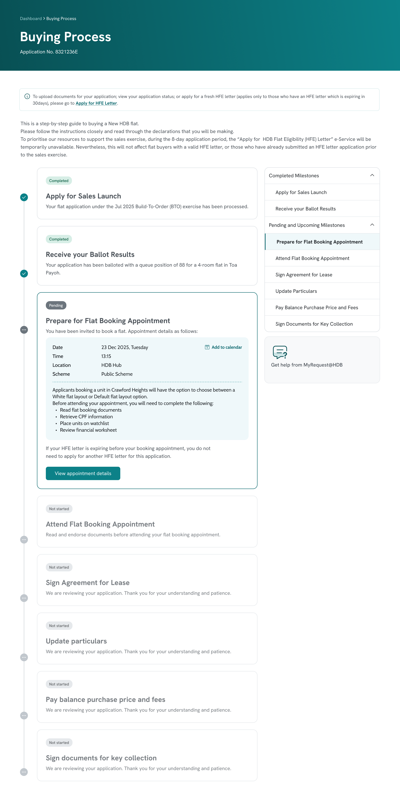
⤢ Expand
Prototype B · Step Jumper · DesktopTeam B's design, re-prototyped with the refreshed design system applied. Auto-scrolls to the active step; sticky step jumper on the right.
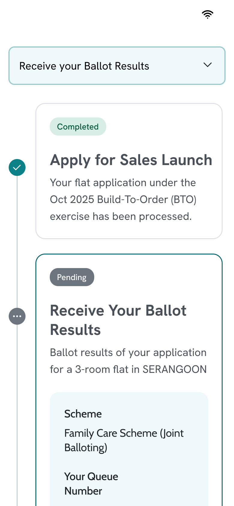
⤢ Expand
Prototype B · Step Jumper · MobileStep jumper translates to a sticky dropdown on mobile.
The Finding That Decided The Recommendation
The test surfaced a stronger argument than expected
The test surfaced no significant difference between the two prototypes on confidence or time. What it did surface was unexpected: none of the participants who saw Team B's prototype interacted with the step jumper at all. When asked what they thought the step jumper was for, they described it as an overview of all steps, not as a navigation control.
On Team A's prototype, participants did not toggle "Show completed steps" to understand where they were in the process. When asked what the toggle would do, they clicked it once and immediately understood its function.
08
Recommended the simpler design on development-cost grounds
The recommendation to my approver and the System Stewards rested not on what the test showed users preferred, but on what the test showed users didn't need. With no measurable advantage from the step jumper, no observed use of it, and the fact that the step jumper was a new component not in the design system, requiring dedicated development effort to build. The simpler collapsed toggle, already aligned to existing components, was the lower-risk, lower-cost path. The recommendation was not to build a better step jumper. It was to remove the step jumper entirely. The Director and System Stewards endorsed the recommendation.
09
Handed over to Team B for alignment
Shared the final design with Team B's design team. Because they had been kept visible to the test scope and prototypes from the outset, the share-out was a clean acceptance rather than a negotiation. That outcome was not incidental. It was the result of keeping Team B visible throughout, rather than presenting a finished recommendation for them to react to. Team B's design team agreed to adopt the layout pattern for their Cards 5 to 8 once their development capacity resumes.
03 ▪ Design Decisions
Translation, not reinvention
With the collapsed completed step toggle established as the foundational pattern, the remaining design decisions were ones of translation rather than reinvention: how the pattern carried into mobile, how it aligned with Team B's parallel ownership of Cards 5 to 8, and how the content within Cards 1 to 4 should be re-surfaced to match the simplified primary view.
Mobile translation followed naturally from the chosen pattern
The collapsed toggle approach carried into mobile without structural change. The button "Show completed steps" remained above the main timeline, visible at the top of the page on load. The side widgets, carrying secondary information, stacked below the timeline, in line with their secondary role. No separate mobile interaction model was needed. That cleanliness validated the pattern choice.
Aligned with Team B on a shared layout pattern, not shared content
Worked with Team B's design team to settle on a shared layout pattern for the page, while leaving the side panel content stage-specific to their scope. Team B's side panel surfaces information relevant to citizens at Cards 5 to 8, by which point a flat has been booked and the relevant context shifts from comparing applications to deepening understanding of the booked flat. Shared layout, divergent content. That split let two teams deliver one coherent citizen experience.
Re-surfaced stage-conditional content from primary to secondary
The original Cards 1 to 4 carried three notes about HDB Flat Eligibility (HFE) letter validity. Each note was true at a different stage, but together they read as contradictory at first glance. Citizens had to mentally figure out which rule applied to them. The card was making the citizen do work the system should have done.
A combined move addressed it:
Consolidated the three notes into a single coherent reference covering HFE letter renewal conditions.
Re-surfaced the consolidated reference into the side panel, behind an accordion that citizens open only if they want to read more.
Protected the primary card content to carry only what was stage-relevant: balloting results on Card 2, flat booking appointment time and venue on Card 3, and so on.
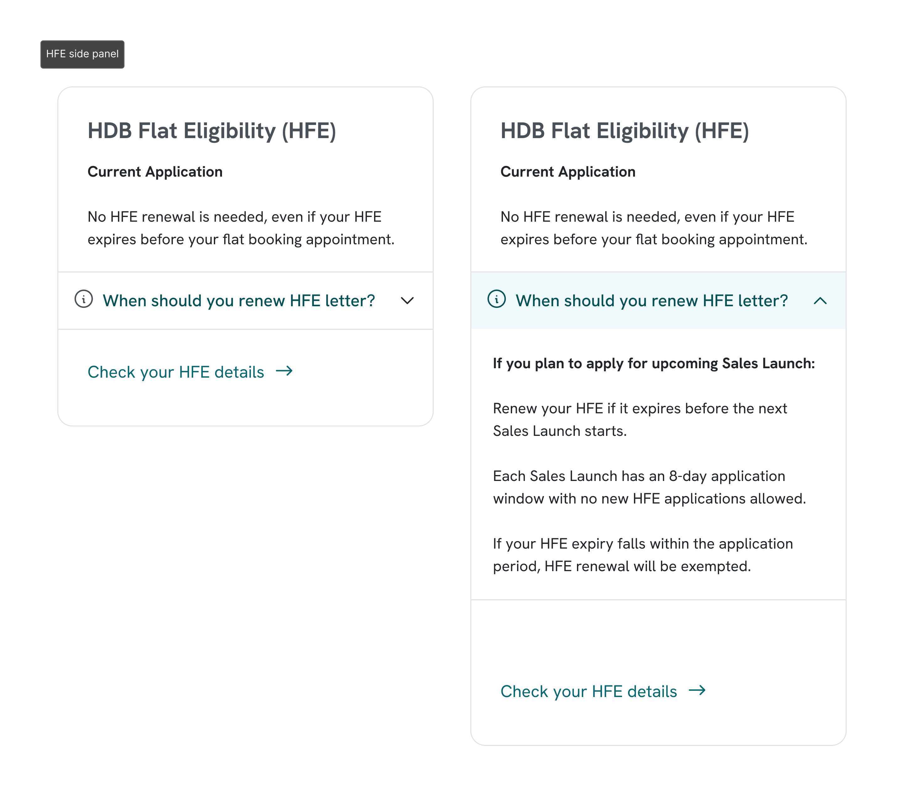
HFE Side Panel · Collapsed and ExpandedConsolidated HFE renewal reference re-surfaced to the side panel. Citizens expand the accordion only when needed.
Final endorsed design
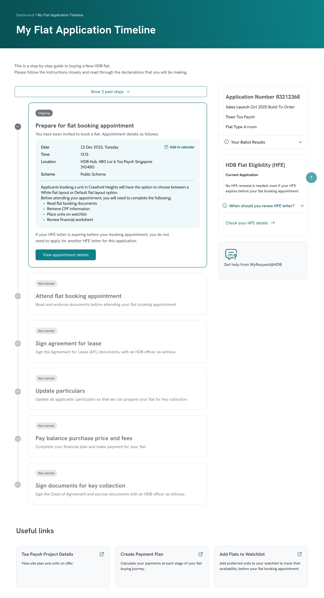
⤢ Click to expand
Final Design · DesktopCompleted steps collapsed, active step anchored at top, HFE content in the side panel accordion.
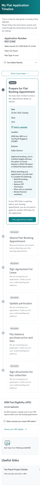
⤢ Expand
Final Design · Mobile · DefaultActive step on load, completed steps hidden, toggle above the timeline.
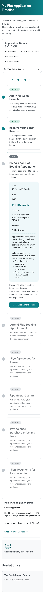
⤢ Expand
Final Design · Mobile · ExpandedCompleted steps revealed after tapping Show completed steps.
04 ▪ Before vs. After
From fragmented ownership to a unified system
The page I inherited was split across two teams with no shared pattern, no validated mobile view, and a design system update that had left both sides misaligned. The work I contributed bridged those gaps and produced a single, validated, cross-team endorsed layout ready for production.
Impact DiagramTwo fragmented team scopes, each with open gaps in validation, system alignment, and mobile coverage, brought into a single validated and cross-team endorsed layout through system stewardship and pattern agreement.
At time of writing, this design has been endorsed but not yet released to production. The final implementation may differ.